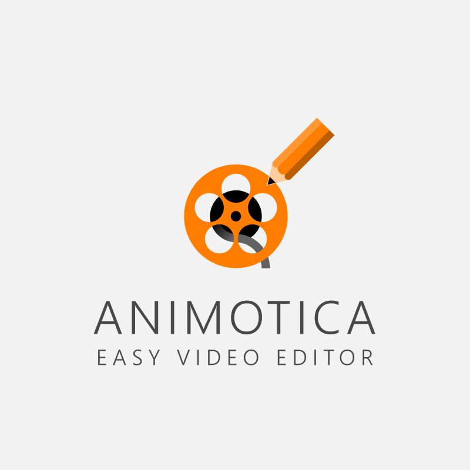

Ovdje sam stavio primjer jednog videa koji sam snimio sa programom Bandicam Screen Recorder i uredio ga sa programom Animotica.
Iako ovaj video nije na mom Youtube kanalu, na isti način snimam ostale videe samo bez glasa, ovo je samo test webcama koji Bandicam može prepoznati kao sekundarni izvor za snimku mog lica i zvuk glasa.
Bandicam Screen Recorder – ovo je alat koji već dugi niz godina koristim za snimanje svojih Youtube videa iz razloga što je vrlo jednostavan i pruža mi sve što tražim da moji videi imaju, a to je snimanje mog screena kako igram. Besplatna verzija oma watermark i omogućava samo 10 minuta snimanja ali može se nadograditi kao one time purchase za uklonjenje ograničenja i bolje kvalitete videa.

Animotica – Ovo je alat koji nije baš jako popularan, ali mi dobro služi za uređivanje mojih videa, npr ako dodajem tekst unutar videa kao overlay ili kombiniram druge videe i izrezujem klipove. Može ga se instalirati na Microsoft Storeu i kao Bandicam, ima besplatnu verziju ali i one time purchase upgrade.
Ovo je jedan glupi kratki video koji sam snimio za šalu, koristio sam Bandicam za snimanje igre i svog glasa putem webcama, a video sam uredio u Animotici tako da smanjim kvalitetu bez vizualnog gubitka.